以戒为师 缁素同守
冯冯
迷失在未来 / 誊录
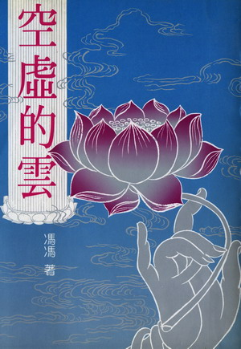一九八六年夏天七八月间，罗午堂伯伯打电话告诉我：“有一位住在观音寺的香港见智法师，要买你的《空虚的云》。”
“我不卖书，我家只有自用的一套，要不然就送他一套好了，”我说：“这位法师请他向天华出版公司买吧！”
“他不只要一套，”罗伯伯说：“他想要买十套。”
“要那么多？那么更该请他直接向天华公司买了！”
“他是想多买几套送给佛教同修的，他自己已经看过了，认为值得推荐，所以他想多请几套送人。”
“那么，我请天华公司代我送他十套好了，钱由我帐下扣！”
罗伯伯再来电话说：“见智法师说，认识你的人太多，都叫你送书，你那送得起？你就是不吃饭也送不了那么多呀！法师说，这是一些居士送给他的供养果敬四百元加币，他想全数拿出来请购《空虚的云》赠送同修，比自己留用这笔钱更有意义，他希望你代他向天华公司洽购，打些折扣，可以多买几套。”
“好的！”我心中很感动：“我一定照办，我可以用作者名下的优待限额，向天华公司请购。”
“法师在加拿大是暂住的，他不久就去美国弘法，然后返香港，你可以请天华公司寄书到香港东晋陀寺瑞源法师代收，留交给他便妥。”
我认识的人多，通常每一批访客之中，都会有几个人要求我赠送著作给他们。这是很使我尴尬的事，因为，有些出版公司赠书给作者，有的只赠五册，有的只送两册，天华公司待我最好，赠送我二十册，即使如此，也还是不够分赠友人的，如果逢人都送，势非三四千册不可。我就是倾家荡产，也负担不起，就是连菜也不买，米也不吃，也不够买书来送人的。一般人不知道作者是必须自己付钱去买赠送额之外的作品来送人的，优待折扣也有一个限度，因为出版社是以低于工本费的价钱卖给作者的，我不能叫出版社连工本费也收不回，何况天华公司印行这种大部头的著作，本来就非以营利为目的，只是半卖半送。我怎能叫天华为我而大赔工本费？
一般访客很少知道出版社与作者的困难，他们有些人说：“这么素有盛名的作家，怎么这样小家子气？书也不肯送人。”他们不知道，作者送了张三，不送李四，就开罪了李四，那么多朋友，作者怎能送得周全？
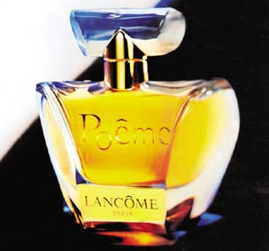 很多人有很奇怪的习惯，千金一掷于欢场，万金一挥于筵席，亿兆元花于珠宝，什么毫无意义的纪念品也都肯买下，毫无吝啬。但是，就是不肯买书，而且专爱叫作者送书，不然就是向作者借书，刘备借荆州，有借无还！
到我家来的，很有些相当阔气的豪门贵人与贵夫人，她们宁可花几百几千元买一瓶小小的法国香水或摆设，却不肯花几十元买一套任何书刊，他们都喜欢叫我送书，还得要亲笔签名，书拿回家去，恐怕也没看上两页，多半只是当作装饰品陈列在露眼的橱柜内，以便向来宾夸耀：“这是冯冯亲笔签名送得书，写得还可以，不过，我哪有时间去看它，又长又臭！他非要送我一套嘛，不收也不好意思，就收下来了。”
这种人，我是领教过的。
还有一种人，比较上面提及的更多，那就是上门来借书的。举例说，有一位阔太太，在香港拥有地产多得数不清，有能力以千万元港币一口气买下跑马地的两座楼房做佛堂。她来访我之时，非要借走一本书不可，那是菲律宾宿务唯慈法师的著作“百喻经新编故事”，是他老亲笔签名，写了我的上款送给我的，我一向珍视，可是，想到佛书是应该流通的，何况这位太太是有名的一位大护法，我就借给她。
“三天之后，”她说：“我叫我儿子驾车把书送还给你。”
到了现在，已经五个年头了，这位大居士还没有把书还给我；她早已环游全世界多少次，又把跑马地的佛堂卖了，在多伦多买了新房子，书仍是没还！
我托了人去催问，得到的答覆是，这位大居士不屑地说；“这个冯冯也太小气了，一本书值得多少钱？有什么了不起，那么紧张？
打电话问她的儿子，他说：“我母亲书那么多，叫我从何找起？”
我最珍视作者签名提上款送得书，丢了这么一套书，使我觉得深深对不起唯慈法师。
这是在家人的刘备借荆州，出家人也有这样的。有一位很有名的老和尚，来舍下借去了我的全套著作，带回美国去，说交给他的大学看看，其实我早已送了一套，他既开了口，我也就将自己仅有的一套借给他。这一借，借了两年之久，我去了多少封信，有曾当面索取，都推搪说找不到了，我说，就在你们图书馆内，连同我的个人资料，都给登记成图书了。你们已有一套我先前赠送的，请将这第二套还给我吧！
某法师的弟子们一个又一个的来指责我小气，还有一位女弟子，是当过医生的，她还写了一首“偈诗”来教训我一顿。
去年，他们终于从图书馆找出了我的这套书及个人资料，全都盖上了印的，送来还我，但是，这两位洋比丘拿出一张清单来，要我签“收”及声明“全部完整无损无缺”、“放弃再次追讨”！
“当初你们师父借走，”我笑：“我可没叫他签字啊！怎么你们还给我，反而要我签收呢？”
“不签就不能还你！”他们说；“这是我们的责任！”
“好吧！我就签，真是！”
另外一位很有名的比丘尼，来我家之时，借走了我的一本台南莫正熹老居士送我的“惊奇集”，以后，没了下文，我打电话追讨几次，老师太说：“我没借你的书呀！你恐怕记错了！”
在场的一位法师，两位居士都记得目击她借走我的书，我也不便再多催索，只好认了。后来还是莫正熹老伯从台南再签名另寄了一套送我，那是他入灭前一年的事。因这套书，他和我通了几次信，他曾表示预知大约化期。
经过多次这些经验，我现在一见到有访客来，立刻就把书房的门锁上了！我并不是不肯送佛书给人，只要不是孤本绝版本，只要我有多余，我都乐于送的。这十年来，我已记不清一共送了多少佛书，像天华公司寄来的天华月刊与书籍，“慈心佛经流通处”寄来的佛书，我都放在佛堂，大批赠送结缘的，但是，书房内的参考书，我是不得不保存的。现在，我在书房门上贴了“请勿擅入”的条子，又贴了一张一只凶恶的老虎狗狺狺而吠的画像。
中国人常说“偷书不算贼”，何况是借荆州呢？马克吐温说；“笨人买书，聪明人借书！”我自然是属于笨人一伙了，我是借别人的书有借必还的，那就更笨！不过，我宁可做笨人！
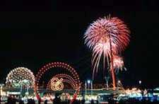 像见智法师那样明白而又体谅作者的，真是少有，我知道在台湾，有些人向天华买我的“空虚的云”等书，一买就是几十套，一百套，我都非常心铭！非常感谢的。在加拿大，可是头一次遇到见智法师这样一下就要买十多套，我心中感谢之余，觉得应该表示一下。
见智法师从未和我见过面，也从无像别人那样要着急来我家看看我是个什么三头六臂的大天魔。我知道这个法师，根本足不出寺门，任凭居士们怎样发心要驾车接送他去游览“世界博览会”，他也不肯去看那“花花世界”；他天天只在寺内修行，不攀外缘，不出去，而且是个出名的“沉默和尚”，非但从不高谈阔论，而且很少讲话。
我觉得这位见智法师的定功很够，我于是很想一会。我打电话去，要邀请他来舍下一叙，一方面是我感激他赏识拙着，同时也是向他请益和请他接受我的素餐供养。
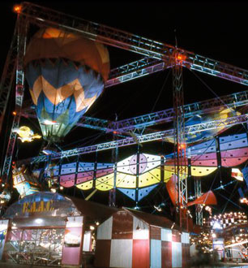这可与我对了缘，我是温哥华人，却一次也没去逛“博览会”。我对这些繁华虚荣的热闹，都无兴趣，亦无爱憎。有人送了票来，我也回绝了。世界博览会与我家相距不到十英里，每夜大放七彩“花火”与爆竹，光彻夜空，我也视若无睹。
见智法师的回答是很客气简洁的：“居士盛意，心领了，比丘沙弥律仪戒律都是不可入白衣家，效白衣往返的！不便来打扰。”
寒舍虽是贫寒，但是，向来经常都有名人名流光临。学者、专家、医生、教士，尤其是佛教名流，无论僧俗，到了温哥华，很少不自动要求莅临舍下一会我这个”怪物“的，向来我推辞也推辞不了。这一次，我要邀请这一位法师，没想到请不来，真是出乎意料之外了。
可是，我并不感到没面子；相反地，我更加尊敬这位法师了！难得还有这样恪守沙弥比丘戒律的出家人啊！是的，佛经中常有提及佛戒弟子入白衣家，效白衣往返！
说起来，佛印和尚和苏东坡的往返戏虐，也是多余的俗气了！
“无肉令人瘦，无竹令人俗。”东坡的打油诗；“若要不瘦又不俗，乃可竹笋炒猪肉。”
看来东坡也不是一个真修行人，附庸风雅，也未免有些做作吧？
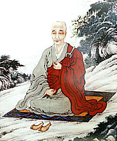 我没有东坡之才气，我没有效法他的必要，对于一位守律极严的法师，我若去拜访，也只能算是俗气了！我尊重这位法师的守律守戒，我于是取消了拜访他的原意！何必那么俗气去拜会呢？彼此都在佛法中神交不就够了么？
从这件事想到了比丘二百五十戒，比丘尼三百六十戒，不知道有多严格？这些戒律，我没有修学律宗，不知其详。手边只有一本“沙弥律仪”，是明代高僧莲池大师所辑述的，上篇“戒律门”说：“佛制出家者，五夏以前，专精戒律：五夏以后，方乃听教参禅……先受十戒，然后近为出家比丘戒之阶梯，远为菩萨戒之根本。因戒生定，因定生慧……自当阅律藏全书。”
“沙弥律仪”先提及十戒，其中第七戒曰：“不歌舞倡伎，不往观听。”第九条戒：“不非时食……不美食。”
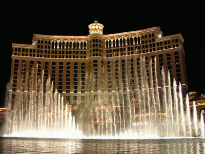想起那些来加的出家师父有些争先恐后去逛“世界博览会”的各国歌舞，还有某英文杂志，赞扬某位西藏已故大法王曾经便服出游，进入夜总会去“了解”众生为何喜欢色情表演，更想起曾有出家师父与在家人结伴往游赌城的大赌馆；赌钱兼看大腿肉感舞，还有去看小电影的，也都美其名谓去体会研究众生！这些事，真叫我这个凡夫俗子叹为观止！我以一介凡夫，已经二十五年未进过戏院的门（从前年少也只是看音乐片与文学片），任凭它是怎样出名的电影，什么美女大腿如云的夜总会，都打不动我的心，什么五光十色的博览会也吸引不了我，去过三藩市、洛杉矶，经过色情电影广告业视而不见，也没上赌城拉斯维卡斯去过！满街的色情画报，也只当是看见垃圾，不明白为什么有些人会着迷，也不明白为什么竟要亲自去“体会”，才可“研究”众生的欲望，更不明白竟有英文杂志大力赞扬他！我这凡夫俗子一心只想守比丘戒也还来不及啊！实在一个人，无论是出家或在家，学佛是应该都守戒的，也应做到见境不住，这并不是很难的事，问题只是在于道心坚不坚。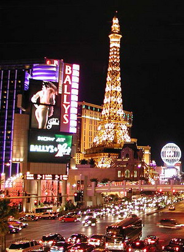 记得二十四年前随文艺作家访问团访问马祖前线，那些文学大家们一窝蜂跑进“军中乐团”去参观“小姐”，最年轻的我，淡然一笑，不随他们去看，我宁愿在远处山坡陪伴谢冰莹教授访问乡下老人，当时我才十八岁。那时候，“梁祝”一片轰动全台，台北变成“狂人城”数以万计的影迷争去欢迎明星，人人哼黄梅调梁兄哥，我都在房内静静看佛经。
不敢自称这些是什么定力，只是个性使然吧？我向来就是如此的，现在看电视，也只看新闻，科学新知与医学新知，地理介绍。对于流行歌曲、色情、暴力节目，是毫无兴趣的。
说到饮食，我也已经有二十五、六年未进过餐馆。现在有很多新朋友常邀我外出去吃馆子，我也都婉拒了。我是吃素的，我一说，他们就要邀我去素菜馆吃，我也不去的，不是说外面的素菜馆不够干净或不素，只是我一向淡薄朴实惯了，不喜欢到外面交际场合去吃美食。
沙弥律仪卷下有很详细的规律，“入众”篇说；“不得办精致条拂、玩器……不得着色服，及类俗人衣饰。”第五篇“随众食”说：“不得见美味生贪心，恣口食。”这都是出家人与在家人所应同守的戒律，不明白何以有出家人居然微服出游去夜总会“研究”色情表演！戒律都守到哪儿去了？
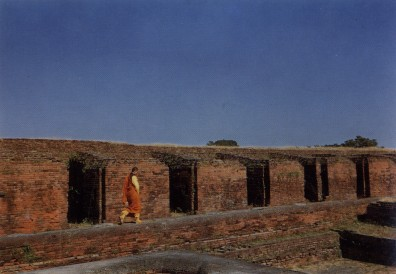 第八篇“习学经典”说；“宜先学律，后学修多罗，不得违越。”这就是，学佛须先学戒律守戒，然后才可以学佛经，这也是出家人与在家人所共同应该遵守的。
该篇又说；“不得习学伪造经典。”现在有很多冒佛教之名的外道，伪造了不少经书，里面的经文，一些剽窃自佛经，大部份是杜撰及歪曲佛理的，什么喝酒就是喝“般若汤”可以开天眼；吃肉就是帮助六畜解脱痛苦，只要为之念往生咒，就可以吃肉了；什么杀生就是超度，不吃肉反而叫六畜不得超度……诸如此类的荒谬主张，都是违反佛教戒律的，都是诲人破戒的。还有那些什么“合籍双修”，要男女赤体同修什么先天罡气，又要这样练功才是正定，……这些邪说，充斥于海内外，真是令人浩叹！学佛的青年人，假如不察，就很容易被其误引而堕落的。
沙弥律仪该篇末段几句：“不得借人经书不还，及不加爱重，以致损坏。”
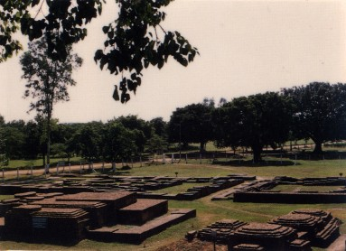 这一段就针对了上文提及的几位人士的毛病了，并非我小气到要小题大做来揭人之短。实在，言而无信，事虽仅一书之微也可见其人的品格如何了啊！学佛人怎可见而无信呢？学佛首先就是要学做人啊！
第二十篇说；“逢戏幻奇怪等，俱不宜看，惟端身正道而行。”
这一点，我这个俗子，自问是做到了，我从不看热闹，当年因访友到了好莱坞。这荒淫之都，满街都有不雅的色情小电影广告，街头站满了妓女妓男，我都看也不看一眼，找到了友人，交代了受人所托的事，我就走了。我甚至不接受他的邀请去参观拍电影片场，我不明白何以有些出家人要去参观博览会、赌城、夜总会，甚至看“成人电影”！大概我真是太“不成熟”了吧？太孩子气了吧？我心中都没有色心，我心中真的像婴孩一样，这是与生俱来的，我常记得与一群婴孩在金光中飞翔，跟随着观世音菩萨，现在也常在定中回到那些天真无邪纯洁的快乐飞翔境界！
该篇又说：“不得回寺夸张所见华美之事。”
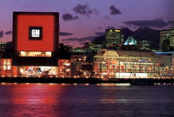 我很诧异听到有些出家人与在家人在一起，赞不绝口地夸张博览会的华美，什么美国GM的汽车真漂亮啦，夏威夷的草裙舞真够艺术啦，美国馆的变幻节目最好啦，加拿大馆的场面最豪华伟大壮观啦，中国馆的丝绸织品最华贵啦……我一听就走开了，因为没有兴趣！
沙弥律仪第二十三篇“参方”说：“古人心地未通，不远千里求师……须为寻师访道，抉择生死，不宜观山玩水，唯图游历广远，夸示于人！”
这一条戒律，我这个俗人也算做到了，我从未为贪图游玩而远行，也从不夸示我跑了全世界多少国家；今天很多学佛的四众弟子，以出国游历观光为风尚，一些来到温哥华挂单的，十天行程之中，九天是到处去逛，去观光，僧俗同游，逛唐人街，吃菜馆子，看电影，上夜总会，逛公园，看博览会，有些出家人不去寺院挂单，却接受在家人的招待住在家宅里，由妇女伺候饮食汤水，浆洗衣物，邀请者固是诚意拳拳，可知法师因此犯了戒条么？ 看了“沙弥律仪”略说，就证实了见智法师婉却我的素筵，是他遵守佛制律戒了。同时，也可以明白什么是应戒的事，非但比丘沙弥应予守戒，就是在家居士也应该守戒，上文引述的一些戒律，实在也是做人的应有自律，人人都应该遵守的啊！
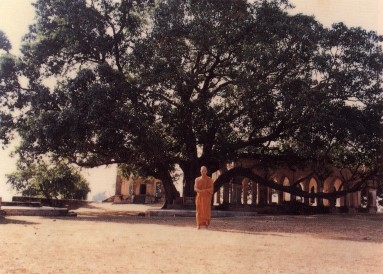比丘戒我不熟识，想来比沙弥戒更严更多，就拿沙弥戒律来说，卷下第二“事师”篇就规定：“……不得纵情自用，随世俗流，行不正事。亦不得住市井闹处，不得住神庙，不得住民房，不得住近尼寺处……。”第三篇说：“不得过历人家。”第四篇“……不得坐视大众劳务，避懒偷安。”“不得谈说朝廷公府政事得失，及白衣家长短好恶。”第五篇“随众食”说：“……无呵食好恶”“不得笑谈杂话！”
本文可能引起误会，认为我狂妄自大，居然敢批评僧宝。不错，白衣不应该批评僧宝，白衣应尊敬法师。但是，这里讲的，是出家人与在家人都难免犯规的通病，彼此都应互相规劝鞭策迁恶为善，君子闻过则喜，倘若有人指出我的过失，我非但不怒，我反而要向他拜谢呢！千万别误会，以为我是在恶意批评，上面说的犯戒，一半也是我们在家人所促成的，我们很多在家人不曾研习过沙弥戒、比丘戒（此戒白衣不得擅自阅览），就很容易以世俗的热情供养恭敬去招待法师，而陷法师于犯戒之不义了。
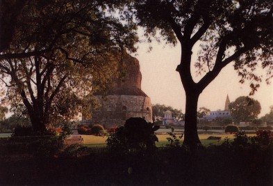 为什么有些在家人要带出家人去逛街市？去看博览会？去看夜总会？去逛赌城综合娱乐场看大腿舞？去看小电影？去观光“人妖街”？去吃餐馆子？请出家人住豪华酒店，带他们逛豪华购物中心，逛“不夜天”？看脱衣舞？向他们敬酒敬烟？看赛马看赛车，看降驯野牛，看摔角……这不是在家人以无知与世俗的淫乐去诱惑出家人吗？
在法师方面，为什么要顾情面而不予以拒绝？为什么不予以斥责？不予以教诲？为什么好像是碍不过情面的样子而入乡随俗呢？我住在美加二十多年，一介凡夫俗子，也未入乡随俗呀！
我深深感觉到，佛教出家人与家人都应互相规劝鞭策，大家互相尊敬互相督促走上正道，别像从前那样，居士偶然提一点改进意见，就有比丘挺身而出来指责是“干预僧团”、“ 毁谤僧宝”（父母有过，为人子者，尚应劝谏，师长犯戒有过，弟子亦应规谏呀！）。
法师是佛法的代表，是为人师表的。但是，任何团体都难免良莠不齐，在家人不应批评出家人，倘若出家人是品学兼优，德仪庄严的话，我们恭敬都来不及，怎该批评？但是，倘若是有失法体法仪的，有损佛教形象的，有犯戒的，也不能检讨吗？怎能接受那些逛夜总会的出家人为师表？他们自不守戒，怎能以身作则去弘法众生？
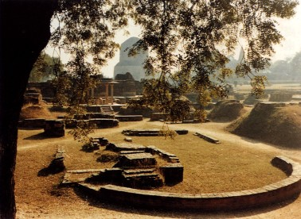 别以为我只批评有些不守戒的出家人，我自我检讨得更严格，来见过我的访客，都知道我是个未剃度的“头陀”，我的生活都是尽力遵守佛制的戒律的，我最钦敬严守戒律的出家人，例如：玄奘大师、慧能大师、莲池大师、虚云老和尚、广钦老和尚、弘一大师、无名比丘尼……和许多许多戒行深严，品德卓绝，佛学亦精湛，道心如金刚石，悲愿如大菩萨的出家人，这些先贤大德，才是我们学佛人的模范！对于他们，我景仰都唯恐不及啊！怎会批评他们？
佛陀在双树林入灭前遗训：“以戒为师！”，这句话，是我们学佛人所应恪守的！
图片出处
原载《天华》第119期：1989年4月1日
原载《天华》第120期：1989年5月1日
原载《天华》第121期：1989年6月1日